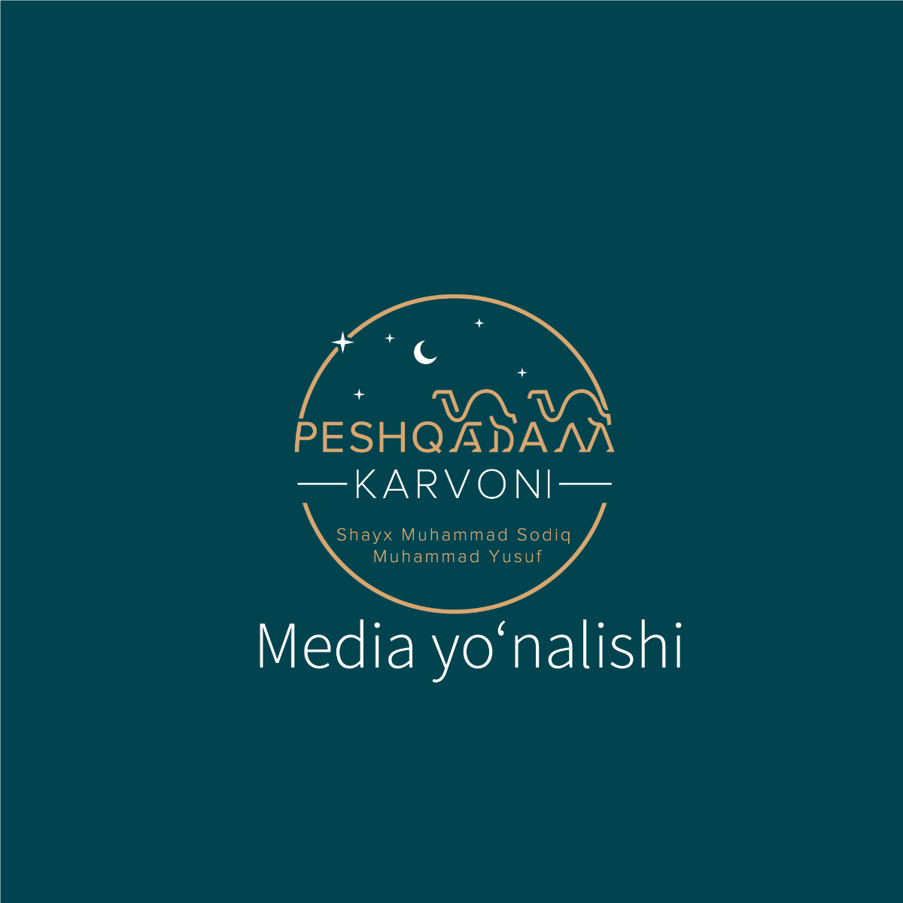
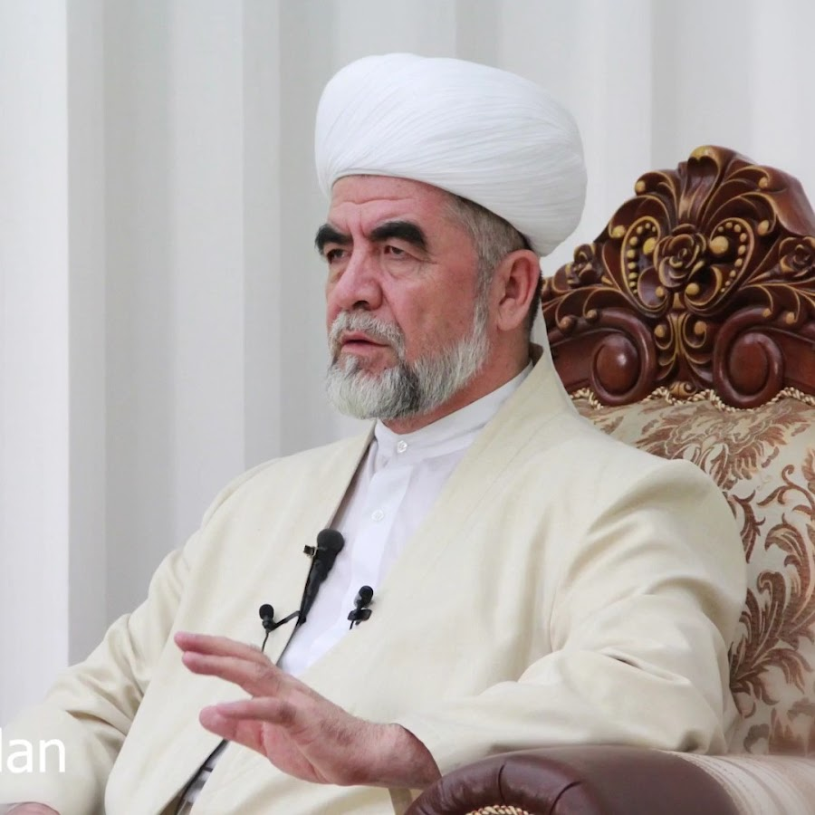
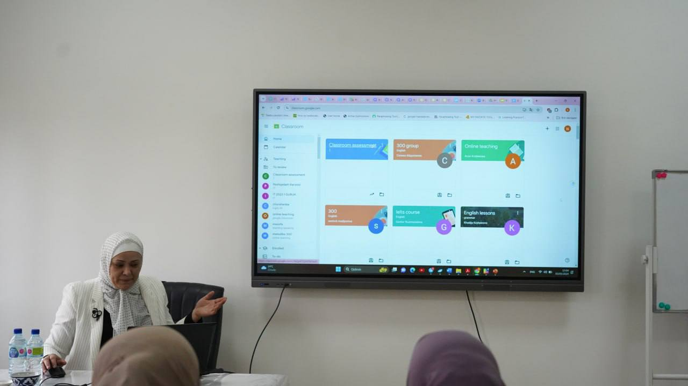
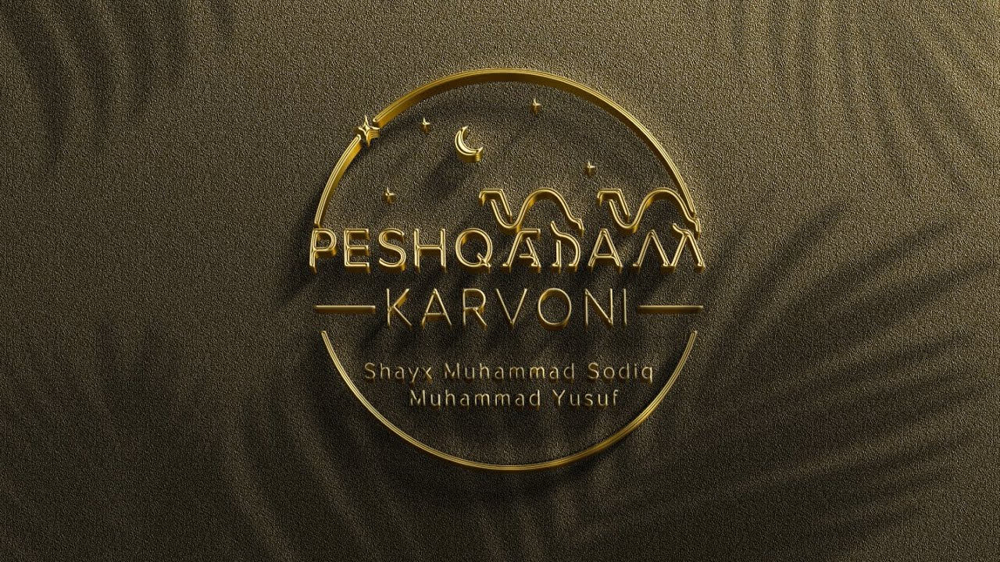
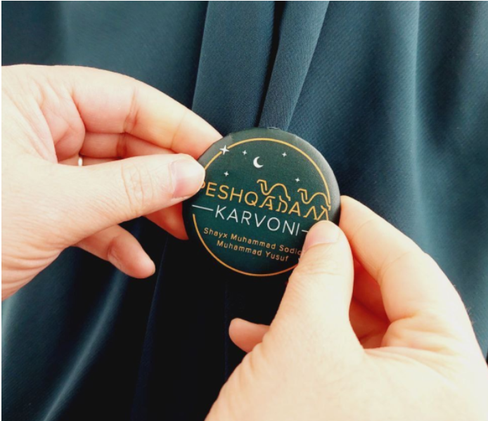

Peshqadam Karvoni
Shayx Muhammas Sodiq Muhammad Yusuf rahimahullohning muborak hayotlari va yorqin ilm yoʻllarini davom ettirish maqsadida qadam tashlang!
Shayx Muhammas Sodiq Muhammad Yusuf rahimahullohning muborak hayotlari va yorqin ilm yoʻllarini davom ettirish maqsadida qadam tashlang!
Ilmni o‘ziga mash‘ala tutgan Peshqadamlar Karvoni yo‘lga chiqadi va sizni o‘z safiga chaqiradi. Bu loyiha 5 yo‘nalishni o‘z ichiga oladi.

Media yo'nalishida shu paytgacha a’zolar tomonidan bir qancha ssenariylar, shorts videolar, ko’rsatuvlar va smm maxsulotlari tayyorlandi.
Ma'sul:Dadamirzayeva DurdonaMedia yo'nalishida shu paytgacha a’zolar tomonidan bir qancha ssenariylar, shorts videolar, ko’rsatuvlar va smm maxsulotlari tayyorlandi.
Ma'sul:Dadamirzayeva DurdonaMedia yo'nalishida shu paytgacha a’zolar tomonidan bir qancha ssenariylar, shorts videolar, ko’rsatuvlar va smm maxsulotlari tayyorlandi.
Ma'sul:Dadamirzayeva DurdonaMedia yo'nalishida shu paytgacha a’zolar tomonidan bir qancha ssenariylar, shorts videolar, ko’rsatuvlar va smm maxsulotlari tayyorlandi.
Ma'sul:Dadamirzayeva DurdonaMedia yo'nalishida shu paytgacha a’zolar tomonidan bir qancha ssenariylar, shorts videolar, ko’rsatuvlar va smm maxsulotlari tayyorlandi.
Ma'sul:Dadamirzayeva DurdonaO‘z qobiliyatingiz bilan jamiyat rivojiga hissa qo‘shing, Peshqadamlar karvoniga qo‘shilish uchun ro‘yhatdan o‘ting!

Peshqadam karvonida sodir bo'layotgan barcha yangiliklardan xabardor bo'ling

"Mutaxassislar tayyorlash" yo‘nalishi a’zosi Djabbarova Nozima tomonidan Imom Buxoriy nomidagi Toshkent Islom instituti ustozalari va talabalariga “Ta’limda zamonaviy kompyuter texnologiyalaridan foydalanish” mavzusida trening o‘tkazildi.
"Mutaxassislar tayyorlash" yo‘nalishi a’zosi Djabbarova Nozima tomonidan Imom Buxoriy nomidagi Toshkent Islom instituti ustozalari va talabalariga “Ta’limda zamonaviy kompyuter texnologiyalaridan foydalanish” mavzusida trening o‘tkazildi.
"Mutaxassislar tayyorlash" yo‘nalishi a’zosi Djabbarova Nozima tomonidan Imom Buxoriy nomidagi Toshkent Islom instituti ustozalari va talabalariga “Ta’limda zamonaviy kompyuter texnologiyalaridan foydalanish” mavzusida trening o‘tkazildi.


Shayx Muhammad Sodiq Muhammad Yusuf rahimahulloh hazratlarining umr yo‘llari, qoldirgan asarlari va undagi shiorlari, bergan saboq va nasihatlariga nazar soladigan bo‘lsak, butun e’tiborlari xalqimiz ma’rifatiga qaratilganiga guvoh bo‘lamiz
Sizning savollaringiz, takliflar va mulohazalaringizni bizga yuboring
+998 xx xxx xx xx
Toshkent viloyati, Toshkent shahar....
@peshqadam_murojaat